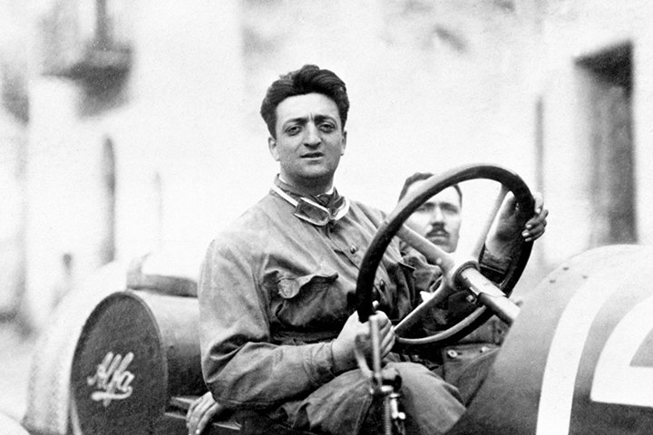
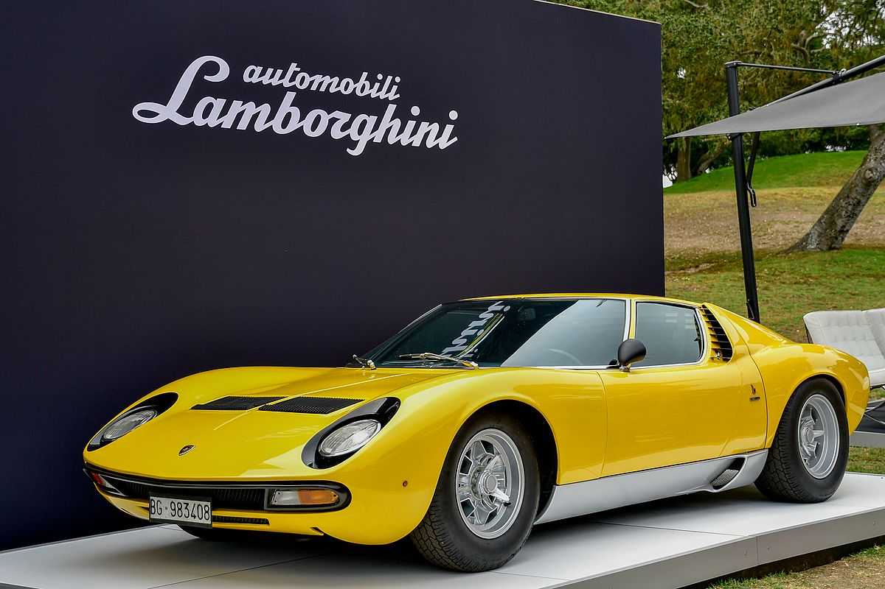
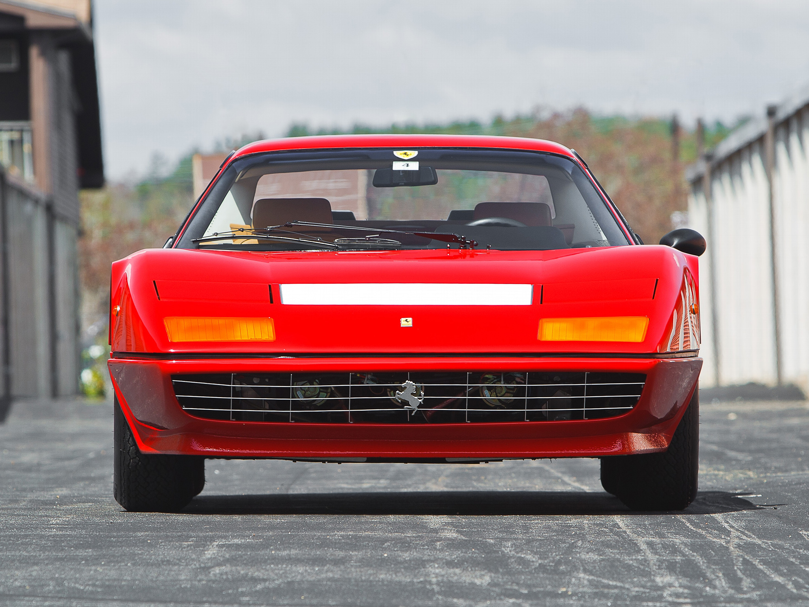
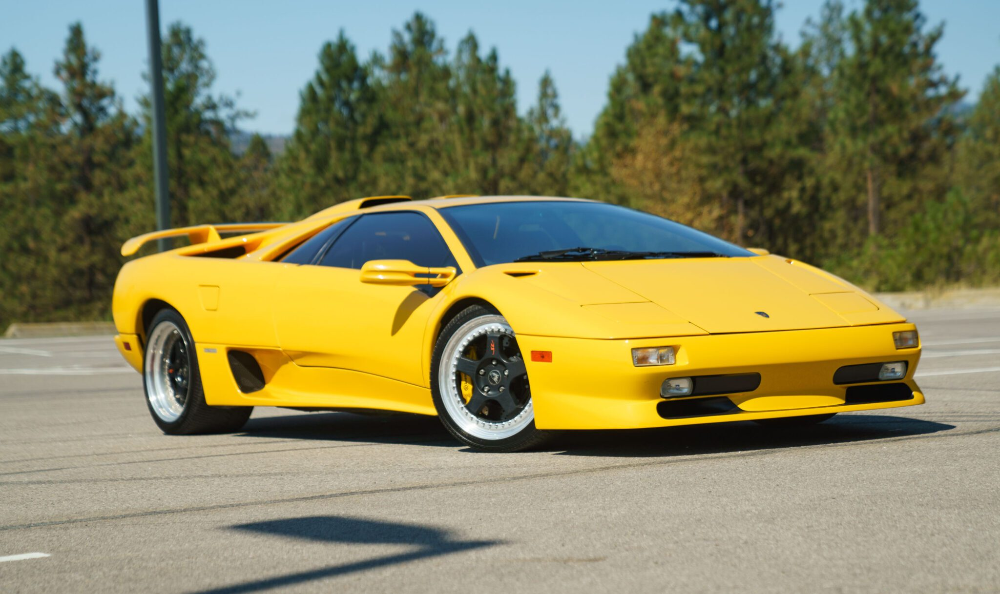
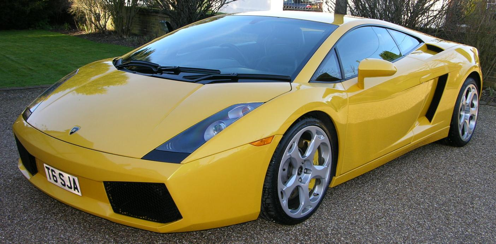
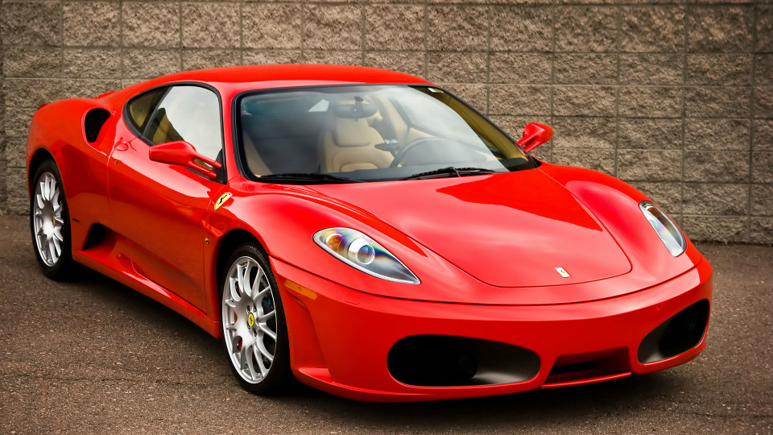

Lamborghini VS Ferrari

Lamborghini vs Ferrari: легендарное противостояние
Соперничество между Lamborghini и Ferrari — это не просто конкуренция двух автомобильных брендов, а настоящая война амбиций, инноваций и скоростных технологий. Этот конфликт родился из личной обиды, но со временем перерос в битву за превосходство в мире суперкаров.
Начало конфликта: обида Ферруччо Ламборгини
История противостояния берет начало в 1960-х годах, когда итальянский предприниматель Ферруччо Ламборгини, владелец успешной компании по производству
тракторов, столкнулся с проблемами в своем Ferrari 250 GT. Будучи опытным инженером, он заметил недостатки сцепления и решил обратиться к Энцо Феррари
с предложением улучшить автомобиль. Однако Энцо, известный своим упрямым характером, пренебрежительно ответил:
"Ты просто производишь тракторы, а не спорткары. Оставь машины профессионалам."

Ферруччо Ламборгини

Энцо Феррари
Эти слова задели Ферруччо, и он решил создать собственного конкурента Ferrari, который бы доказал превосходство его инженерных решений. Так в 1963 году появилась компания Automobili Lamborghini, первым автомобилем которой стал Lamborghini 350 GT.
Рождение суперкаров (1960–1980)
Lamborghini с самого начала ставил перед собой задачу создать более мощные и удобные автомобили, чем Ferrari. В 1966 году компания представила Lamborghini Miura, первый в мире суперкар с среднемоторной компоновкой, что дало ему фантастическую управляемость и аэродинамику.
 Ferrari в то время продолжал придерживаться классической переднемоторной компоновки, но под давлением Miura компания начала разработку среднемоторных моделей, таких как Ferrari 512 BB (1973).
Эра гиперкаров и культовых моделей (1980-2000)
В этот период Ferrari и Lamborghini создавали ультрабыстрые и технологичные автомобили, стремясь превзойти друг друга в мощности, скорости и эксклюзивности.
Ferrari F40 vs Lamborghini Diablo
Ferrari выпустил F40 (1987) – первый серийный автомобиль, разогнавшийся до 324 км/ч. С 2.9L V8 (478 л.с.) и ультралегким карбоновым кузовом он стал иконой скорости.

Lamborghini ответил Diablo (1990) с 5.7L V12 (492 л.с.) и максимальной скоростью 325 км/ч. В отличие от F40, он был мощнее, но предлагал чуть больше комфорта.
F50 vs Diablo VT: борьба технологий
Ferrari F50 (1995) получил V12 от болида F1 (520 л.с.), карбоновый монокок и разгон 0-100 км/ч за 3,9 сек.
Lamborghini улучшил Diablo, добавив полный привод (Diablo VT, 1993), что сделало его более стабильным и удобным для управления.
Инновационная гонка (2000–2010)
В начале 2000-х Lamborghini и Ferrari вступили в новую фазу борьбы, делая ставку на технологии, аэродинамику и мощность.
Ferrari: Формула-1 на дорогах
Ferrari активно использовал решения из F1, что особенно проявилось в Ferrari Enzo (2002):
- 6.0L V12, 660 л.с., разгон 0-100 км/ч за 3,1 сек.
- Карбоновый монокок (впервые у Ferrari).
- Активная аэродинамика и адаптивная подвеска, позаимствованные у гоночных болидов.

Enzo стал революционным суперкаром, объединившим трековые технологии с дорожным комфортом.
Lamborghini: мощь и стиль
После покупки компанией Audi Lamborghini получил немецкую надежность и современные технологии. Первой знаковой моделью стал Murciélago (2001):
- 6.2L V12, 580 л.с., полный привод (AWD).
- Активные воздухозаборники и адаптивное антикрыло для улучшенной аэродинамики.
- Разгон 0-100 км/ч за 3,4 сек, максимальная скорость 330 км/ч.
Murciélago стал мощным конкурентом Ferrari и символом новой эпохи Lamborghini.
Gallardo vs F430: битва младших суперкаров
В 2003 году Lamborghini выпустил Gallardo — первый серийный Lambo с V10, мощностью 500 л.с. и полным приводом. Он стал доступнее Murciélago, но все еще сохранял фирменную агрессию бренда.
 В ответ Ferrari представил F430 (2004) с 4.3L V8 (490 л.с.), задним приводом и технологиями из F1:
- E-Diff (электронный дифференциал) для лучшей управляемости.
- Манеттино – переключатель режимов вождения.
- 0-100 км/ч за 3,9 сек, задний привод обеспечивал азартную управляемость.
Gallardo был стабильнее за счет полного привода, но F430 предлагал больше эмоций за рулем.
Современное противостояние: кто впереди?
Сегодня Lamborghini и Ferrari продолжают борьбу в сегменте суперкаров:
- Ferrari SF90 Stradale — 1000 л.с., гибридная система.
- Lamborghini Revuelto — 1015 л.с., гибридный V12.


Ferrari делает ставку на технологии Формулы-1 и максимальную скорость, а Lamborghini — на экстремальный дизайн и эмоции от вождения.
Конкуренция между этими брендами останется вечной, ведь каждый новый Lamborghini или Ferrari — это вызов сопернику.